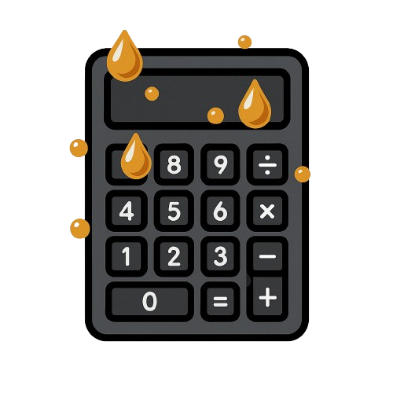

PROJECT
BHOPAL Calc
Cannabinoid-content, terpene-ratio, formulation, and extraction-yield arithmetic for lab and cultivation workflows.

ZZX-LABS R&D // SOFTWARE // WEB MIRROR
Cannabinoid content and formulation calculator for estimating active potency, serving concentration, terpene ratios, and extraction recovery from user-supplied lab or cultivation values.
CANNABINOID / TERPENE / EXTRACTION CALCULATOR
DECARBOXYLATION-AWARE POTENCY
Estimate potential active THC/CBD mass from acidic and neutral cannabinoid lab percentages.
CONCENTRATION / PORTION MATH
Divide a known or estimated batch cannabinoid total across a defined number of portions.
MASS-BALANCE ESTIMATE
Estimate recoverable extract mass and cannabinoid content from material mass, total analyte percentage, extraction efficiency, and post-process recovery.
RELATIVE PROFILE
Normalize user-supplied terpene measurements into a relative profile for comparing batches.
BATCH ANALYSIS
Compare extraction scenarios added from the Extraction Yield tab.
| Batch | Input g | Target % | Recovered mg | Concentrate g | Overall |
|---|
LOCAL REPORT
Export the current calculator state and comparison batches as JSON.
PROJECT
Cannabinoid-content, terpene-ratio, formulation, and extraction-yield arithmetic for lab and cultivation workflows.
CALCULATION BOUNDARY
All outputs depend directly on entered assay/recovery assumptions. The page does not infer product identity, legality, medical suitability, or verified potency.